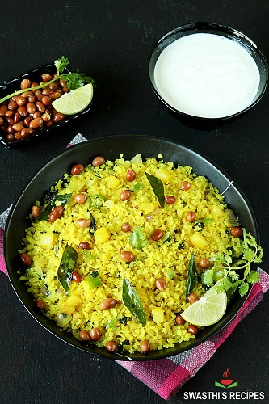

- પોહા 1 1/2 કપ
- બટાકા 1 મીડીયમ
- ડુંગળી 1 નાની
- તેલ 1 ચમચી
- મગફળી 3 ચમચી
|
|
|
|
- પોહાને નાના છિદ્રવાળા ઓસામણિયુંમાં મૂકો અને અડધા બાફેલા પાણી પર રેડો. કોરે સુયોજિત.
- ઘન કરેલા બટાકાને ધોઈને સૂકવી લો, પછી સૂર્યમુખી તેલમાં સોનેરી થાય ત્યાં સુધી તળી લો. રસોડાના કાગળ પર ડ્રેઇન કરો અને બાજુ પર મૂકો.
- એક મોટા પેનમાં 2 ચમચી તેલ ગરમ કરો અને તેમાં સમારેલી ડુંગળી, આદુ, બદામ અને મરચાં ઉમેરો. સુગંધિત અને બદામ સોનેરી થાય ત્યાં સુધી રાંધો. તેને બહુ બ્રાઉન ન થવા દો.
- જીરું, હળદર, હિંગ અને કઢી પત્તા ઉમેરો. 30 સેકન્ડ માટે સાંતળો. વરિયાળી પાવડર અને બટાકા ઉમેરો અને કાળજીપૂર્વક અને સારી રીતે ભળી દો.
- હવે ઠંડા થયેલા પોહાના દાણાને કાંટા વડે હળવેથી અલગ કરો અને તપેલીમાં ઉમેરો. મીઠું, ખાંડ, લીંબુ અને મરી સાથે સિઝન. ધીમેધીમે કડાઈમાં નાખો અને તાપ પરથી દૂર કરો. સમારેલી કોથમીરથી ગાર્નિશ કરો.
- ભૂખ્યા મિત્રો અને કુટુંબીજનોને ત્યારે જ પીરસો જો તમે રસોઈ કર્યા પછી આખી હાંસી ઉડાડવાનું ટાળ્યું હોય.